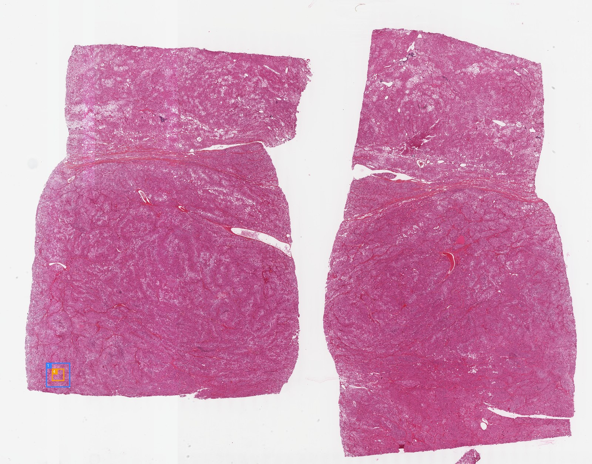
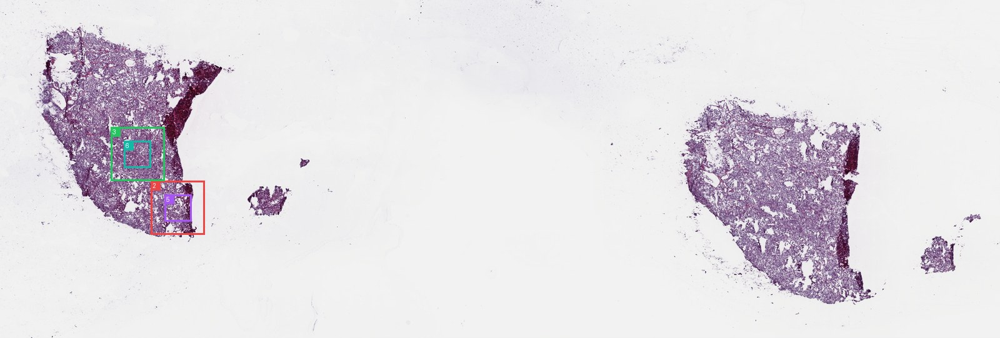
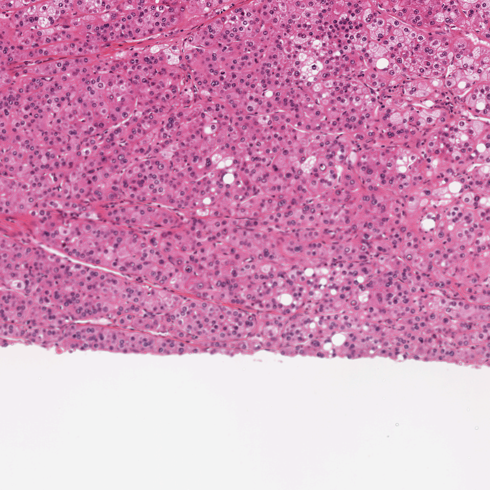
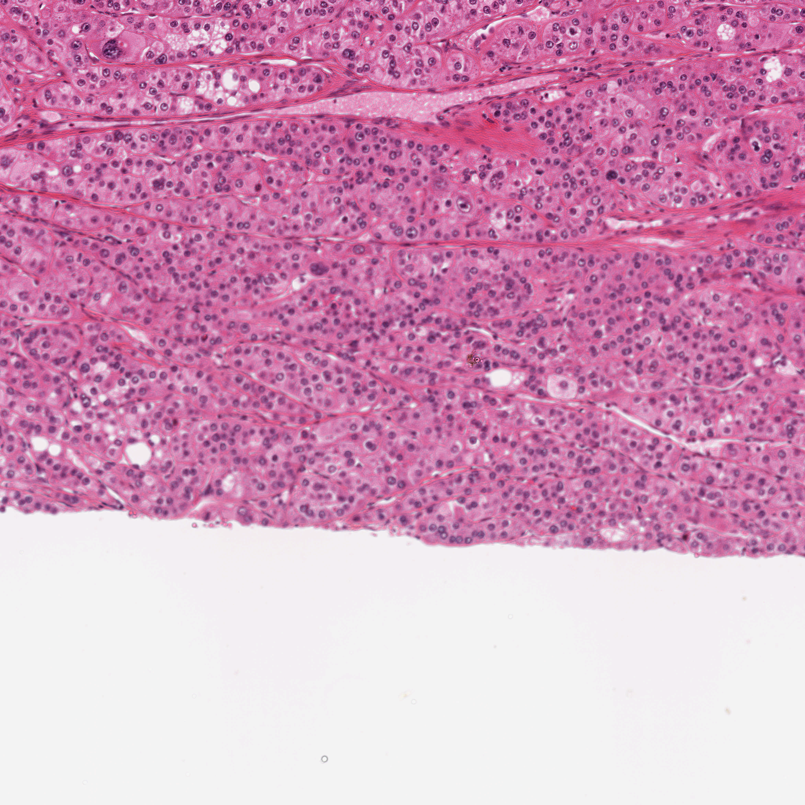

Visual Evidence
Review ROI thumbnails, WSI overviews, zooms, and segmentation overlays.


Each card opens in the inspector with source path, segmentation fractions, zoom lineage, and related evidence.
MedGemma rounds are shown as morphology evidence, separated from final report generation.
No morphology rounds found.
KEEP hits are supporting or differential knowledge, not direct visual observations.
An adrenal cortex cancer that forms in the outer layer of tissue of the adrenal gland and that has_material_basis_in abnormally proliferating cells derives_from epithelial cells.
A syndrome characterized by myxomas, spotty pigmentation of the skin and endocrine overactivity.
An adrenal adenoma that is a benign tumor of the adrenal cortex.
An endocrine organ benign neoplasm that arises within the adrenal medulla, releasing epinephrines and norepinephrines hormones that cause either episodic or persistent high blood pressure.
A directory-style timeline. Click a step to inspect the exact checkpoint payload without leaving the page.
01_roi_selection
02_site_prediction
04_segmentation_qc
06_preliminary_diagnosis_sufficiency
07_reinspection
09_slots_claim_verification
10_report
Claims should be supported, weak, not assessable, or removed. The evidence column links claims back to figures or non-image evidence.
| Claim | Status | Field | Statement | Evidence |
|---|---|---|---|---|
| supported | site | adrenal gland / adrenocortical tissue The site is identified as adrenal gland/adrenocortical tissue based on the provided site metadata (evidence::site). Morphologically, the cells exhibit abundant... | ||
| supported | primary_diagnosis | Adrenocortical carcinoma The combination of the known adrenal site (evidence::site) and the presence of a high-grade neoplasm with marked nuclear atypia, high mitotic activity (implied... | ||
| supported | broad_type | carcinoma The tissue is composed of cohesive sheets of atypical epithelial cells (segmentation class 'Neoplastic' > 80% in multiple ROIs), consistent with a carcinoma. | ||
| supported | subtype | adrenocortical carcinoma Supported by the specific diagnosis of Adrenocortical Carcinoma (C002) and the morphological features of lipid-rich cells and necrosis. | ||
| supported | malignancy | malignant The presence of extensive necrosis (linked ROI evidence, linked ROI evidence), high cellularity, and nuclear atypia confirms malignancy. | ||
| supported | grade | high The tumor exhibits marked nuclear pleomorphism, hyperchromasia, and prominent nucleoli (visible in ROI images), along with extensive necrosis, which are featur... | ||
| supported | necrosis | present with extensive geographic necrosis Segmentation data shows significant 'Dead' tissue fractions (e.g., 13.7% in linked ROI evidence, 5.5% in linked ROI evidence). Visual inspection of the ROIs co... | ||
| not_assessable | invasion | not assessable from ROI images The provided ROI images show tumor parenchyma and necrosis but do not include the tumor edge or interface with surrounding normal tissue required to assess inv... | ||
| not_assessable | ihc_molecular | not assessable from H&E images IHC and molecular status cannot be determined from H&E images alone. | ||
| supported | tumor_architecture | Diffuse sheets and nests of cells with extensive geographic necrosis and hemorrhage The images show diffuse sheets and nests of cells. Extensive geographic necrosis is clearly visible in linked ROI evidence and linked ROI evidence. Hemorrhage... | ||
| supported | cytology | Large polygonal cells with abundant eosinophilic to vacuolated (lipid-rich) cytoplasm; marked nuclear pleomorphism, hyperchromasia, and prominent nucleoli The cells are large and polygonal with abundant eosinophilic to vacuolated cytoplasm (lipid-rich). Marked nuclear pleomorphism, hyperchromasia, and prominent n... | ||
| supported | stroma_inflammation | minimal stroma; necrotic debris present Segmentation stats show low fractions of Connective tissue (mean ~6%) and Inflammatory cells (mean ~0.2%). The 'Dead' class fraction corresponds to necrotic de... |
These are the ROIs returned by the grade-support branch. A later diagnostic selection may also reuse a listed ROI.

ROI: TCGA-OR-A5LL-01Z-00-DX1.08588029-C532-4CDD-B945-251315EFF5C0_foundation_x38608_y72496_l0_w4096_h4096
Source slide: TCGA-OR-A5LL-01Z-00-DX1.08588029-C532-4CDD-B945-251315EFF5C0
ROI coordinates: x=38608, y=72496 (level-0 origin); width=4096, height=4096 (pixels at ROI level 0)
This ROI is not listed in the final diagnostic selection.
Input evidence reserved for the grade-only branch. This display adds no diagnosis or grade.

ROI: TCGA-OR-A5LL-01Z-00-DX1.08588029-C532-4CDD-B945-251315EFF5C0_foundation_x33488_y72496_l0_w4096_h4096
Source slide: TCGA-OR-A5LL-01Z-00-DX1.08588029-C532-4CDD-B945-251315EFF5C0
ROI coordinates: x=33488, y=72496 (level-0 origin); width=4096, height=4096 (pixels at ROI level 0)
This ROI is not listed in the final diagnostic selection.
Input evidence reserved for the grade-only branch. This display adds no diagnosis or grade.